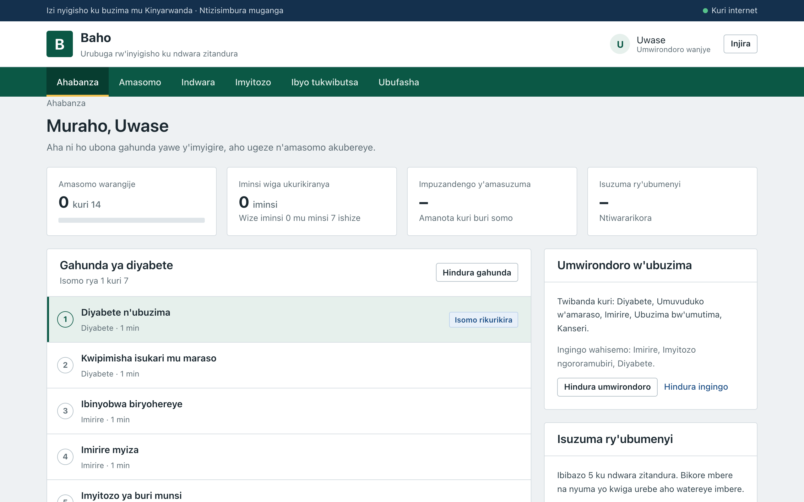
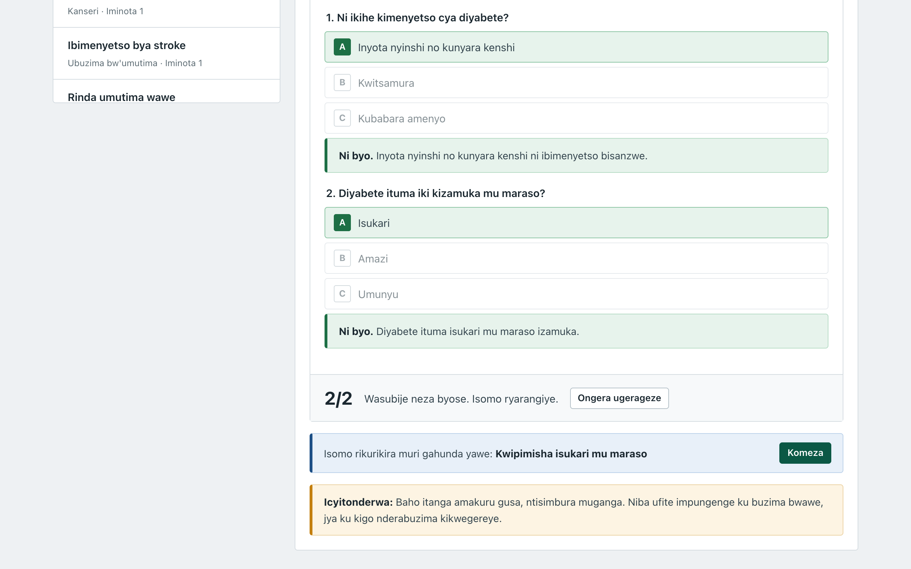
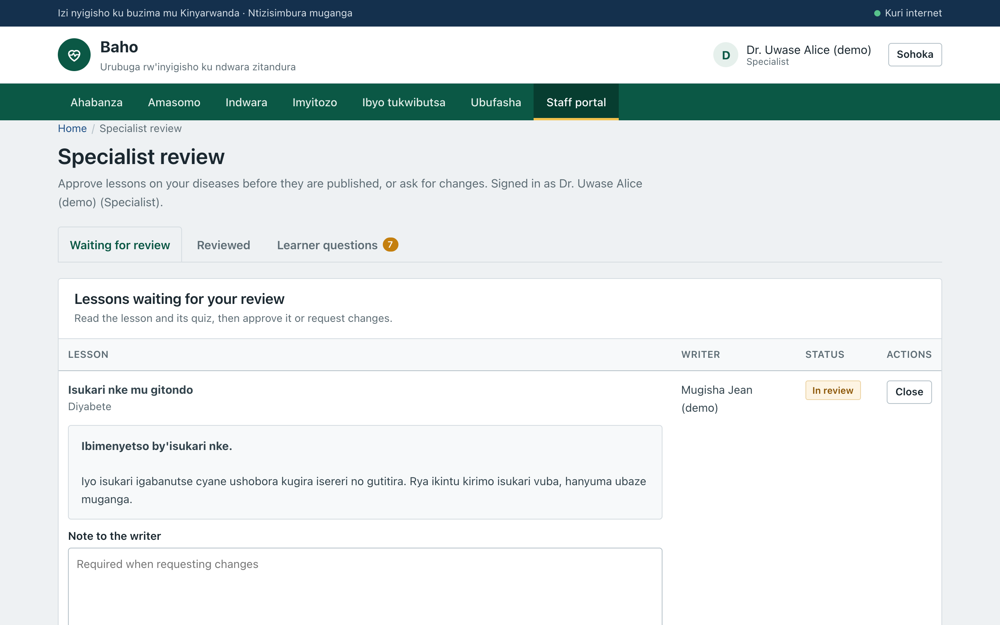

Baho is a progressive web app that teaches people with little health information in their own language how to prevent and live with hypertension, diabetes, heart disease and cancer. Learners pick topics, may fill a private health profile, and then follow a study programme of short lessons, each with an illustration, plain-Kinyarwanda text, audio and a quiz. Health workers write lessons, a specialist for each disease approves them, and an administrator publishes them. The app works offline after the first visit and runs on low-cost phones.
Architecture. React 18 + TypeScript (Vite) PWA with Redux Toolkit → REST API on Node 20 + Express (/api/v1) → PostgreSQL 16 (14 tables). In production the three parts run as a Docker stack behind Caddy (HTTPS); GitHub Actions tests, builds and deploys every push to main. The health profile is encrypted on the device and never sent to the server.

designs/architecture.mmd)Requirements are those of the approved proposal (Tables 6 and 7). Evidence refers to the repository: screenshots in designs/screenshots, tests in backend/tests and frontend/src/**/*.test.ts, measurements in docs/evidence.
| Planned feature | Intended purpose | Status | Evidence / justification of changes |
|---|---|---|---|
| FR01 Kinyarwanda content | Reach people who do not read English or French | Completed | All learner text in Kinyarwanda, reviewed through docs/translations; staff portal in English by request (easier to maintain and translate) |
| FR02 Audio playback | Learners with low literacy can listen | Partial | Staff upload a person's recording per lesson (AudioUpload.tsx, MediaStore); play, pause, replay, seek, speed, offline. No computer voice by design, so lessons without a recording show no player; recordings still to be made |
| FR03 NCD module | Awareness of hypertension, diabetes, heart disease | Completed | NcdScreen.tsx; cancer added; admins add new diseases (screenshots 08, 19) |
| FR04 Reminders | Habits: water, walking, medicine, check-ups | Partial | Reminders saved per account with browser notifications while the app is open; server Web Push not built (needs a push service and keys) |
| FR05 Illustrated exercises | Safe physical activity at home | Completed | ExerciseScreen.tsx: three levels, steps, illustration, audio, safety note (screenshot 10) |
| FR06 Offline-first | Weak rural connectivity | Completed | sw.js caches app and audio; lessons kept on device; tested offline with browser cache cleared (§4) |
| FR07 Onboarding: language, topics | Personalise from the first visit | Partial | Topics and name chosen; Kinyarwanda only, so no language choice yet (FR14) |
| FR08 Private risk self-assessment | Target content without collecting data | Completed | Conditions + six questions; AES-GCM in IndexedDB (screenshot 03) |
| FR09 Ranked content | Show the most relevant lessons first | Completed | rankLessons with the reason shown; lesson list opens on the learner's topics and their diseases come first; unit-tested |
| FR10 Phone + PIN accounts, JWT | Most users have a phone, not an email | Completed (changed) | Phone + 4–6 digit PIN, lockout after 5 failures; one HMAC-signed 12-hour token instead of access + refresh pair (simpler, no extra dependency) |
| FR11 Sync with the server | Keep progress across devices | Partial | Progress, quiz scores, reminders, questions stored on the server for signed-in learners; anonymised usage analytics not built (privacy-first scope) |
| FR12 Admin content control | Publish, retire, edit; answer reports | Completed | Publish, unpublish, edit, delete; report status; FAQ management (screenshot 16) |
| FR13 Progress and streaks | Motivation to keep learning | Completed | Lessons done, streak, 7-day calendar, quiz average, knowledge-check gain |
| FR14 Future languages | Extend beyond Kinyarwanda | Partial | Every learner string is extractable and replaceable by script (scripts/translations); no runtime language switch |
| FR15 Responsive layout | Phones, tablets, laptops from one codebase | Completed | 320–1920 px with no horizontal scroll; tab bar on phones (§4, screenshots 13–15) |
| FR16 Staff roles | Only trusted professionals write content | Completed (changed) | Admin creates writer, specialist (= reviewer) and admin accounts; specialists assigned to diseases; accounts created directly rather than by email invitation |
| FR17 Review before publishing | Medical accuracy | Completed | LessonWorkflow: specialist approval required (409 otherwise); no one reviews their own lesson (screenshot 20) |
| FR18 Offline FAQ with audio | Self-help without a connection | Partial | Searchable FAQ in Kinyarwanda, cached offline (screenshot 12); audio answers need human recordings |
| FR19 Issue reports, queued offline | Feedback from the field | Completed | Outbox sends queued reports when online; admin updates status |
| NFR01, NFR03 Speed, size | ≤ 3 s on mid-range Android; shell ≤ 5 MB | Met | 2.37 s largest paint on a mid-range phone with photos (4.24 s low-end); about 230 KB first visit on a phone |
| NFR04, NFR05 Security | HTTPS, hashed PINs, encrypted local data | Mostly met | HTTPS; scrypt (salted) instead of bcrypt; AES-GCM health profile; token in localStorage rather than an HttpOnly cookie |
| NFR06 Answers stay on device | Privacy | Met | No API accepts health-profile data |
| NFR08, NFR10 Compatibility | Current Chrome/Edge/Safari; 360–1920 px | Met | Chrome 156, Safari iOS 26.5; 6 widths without overflow |
| NFR09 Scalability | 10,000+ users without re-engineering | Met (local test) | Stateless API, 5,400–21,000 req/s at 50 concurrent users, p99 ≤ 11 ms |
| NFR11 Access control, audit | Accountability for staff actions | Partial | Role checks on every staff route; reviewer and review time stored on each lesson; no separate audit-log table |
| NFR07 Usable without instruction | First-time smartphone users | Not yet evaluated | Needs the 30-participant study (SO3) planned after the prototype |
Additions beyond the proposal (from supervisor feedback): a formal portal redesign replacing the first, generic-looking interface, with real, openly licensed photographs (several from Rwanda) instead of drawn illustrations; phone sign-in prioritised because most users have no email; specialist approval per disease; English staff portal; a translation review pipeline.



localStorage immediately, and replaces it when the response arrives; with no connection the cached or built-in content is used.POST /auth/login takes a phone number or an email in one field. The server normalises the phone number, checks the lockout, verifies the scrypt hash and returns an HMAC-signed token with the user's role. Every protected route runs authenticate and requireRole.review. If its disease has a specialist, the lesson appears in that specialist's queue with the full text and quiz answers; approving sets approved, reviewed_by and reviewed_at. Only then can an admin publish it; earlier attempts return 409.POST /quiz-attempts and graded on the server, so a learner cannot alter their score; the best score per lesson is kept and the programme moves to the next lesson.Six approaches were used (details: docs/testing.md). Each found something that was then improved.
| Approach | Why and how | Results | Improvements made |
|---|---|---|---|
| Unit | Rules must hold in every case; Node test runner and Vitest | 45 tests pass (workflow, phone/PIN, lockout, audio format, ranking, learner choices, risk tags, streaks, store) | Streak split into a pure function; lockout made a class with an injectable clock |
| Integration (API) | Real Express app called over HTTP | 18 tests pass: roles, phone sign-up, review/publish, audio upload, quizzes, progress | Covers the whole specialist workflow end to end, so later changes cannot break it unnoticed |
| Different inputs | Valid, invalid and edge values (phone formats, PIN length, 5 wrong PINs, early publish) | Correct 400 / 403 / 409 / 429 responses with readable messages | Client-side checks mirror the server so mistakes show before sending |
| Performance | Lighthouse on the live site: mid-range phone, low-end phone (6× CPU, 3G), desktop | Performance 95 / 75 / 100 with photos (100 / 92 / 100 before); accessibility, best practices, SEO 100 | Fixed layout shift (0.109 → 0), heading order, robots.txt; photos: 480 px copies, lazy loading, preload (1.3 MB → 226 KB) |
| Compatibility and offline | Chrome 156 at 6 widths, Safari iOS 26.5 on two iPhones, offline with cache cleared | No overflow 320–1920 px; renders in Safari; first text in 2.9 s at 400 kbit/s | Found the app blank offline after a first visit; the service worker now caches the built files at install |
| Load | autocannon, 50 concurrent users, 15 s (local, not the shared server) | 5,379–20,967 req/s; p99 ≤ 11 ms; 0 errors | Confirms the stateless API design for NFR09 |
| Lighthouse (live) first → fixed → photos | Performance | Accessibility | Best practices | SEO | Largest paint | Layout shift | Blocking time |
|---|---|---|---|---|---|---|---|
| Mid-range phone | 97 → 100 → 95 | 98 → 100 | 100 | 92 → 100 | 2.37 s | 0.000 | 0 ms |
| Low-end phone | 90 → 92 → 75 | 98 → 100 | 100 | 92 → 100 | 4.24 s | 0.084 → 0.000 | 0 ms |
| Desktop | 97 → 100 → 100 | 98 → 100 | 100 | 92 → 100 | 0.44 s | 0.109 → 0.000 | 0 ms |
ui.tsx, components/admin), the store, the API client and pure logic (lib/).LessonWorkflow owns all lesson-status rules, used by the content and review modules; LoginGuard keeps its failure map private (#failures).withFallback), so callers do not know which store answers and tests need no database.LoginGuard takes its clock as a parameter, making time-based rules testable.rankLessons): score = 3·risk match + 2·topic match − 4·finished, sorted with newest first on ties; O(n log n). Transparent, so each card can say why it was suggested.resolve(requested, current) holds a publish request in review until approval.+2507XXXXXXXX.index.html; an outbox replays reports when online.